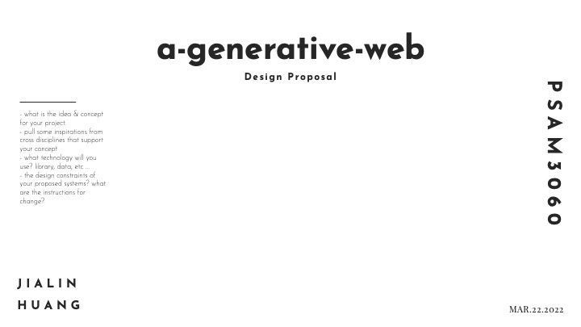
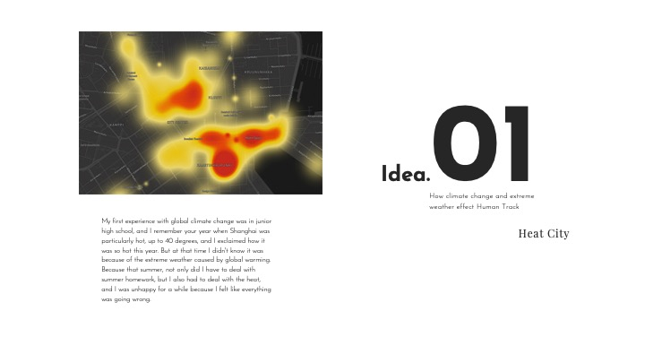
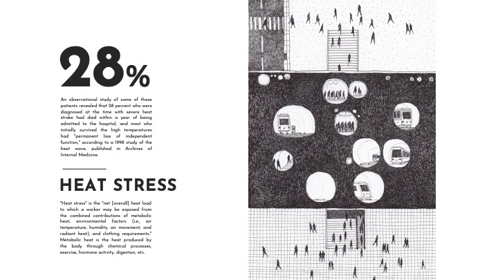
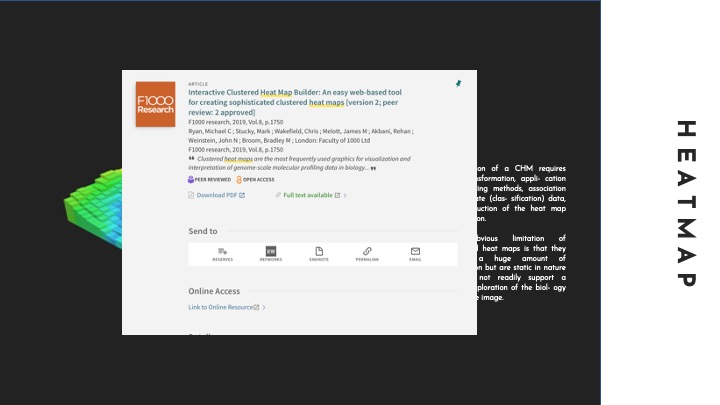
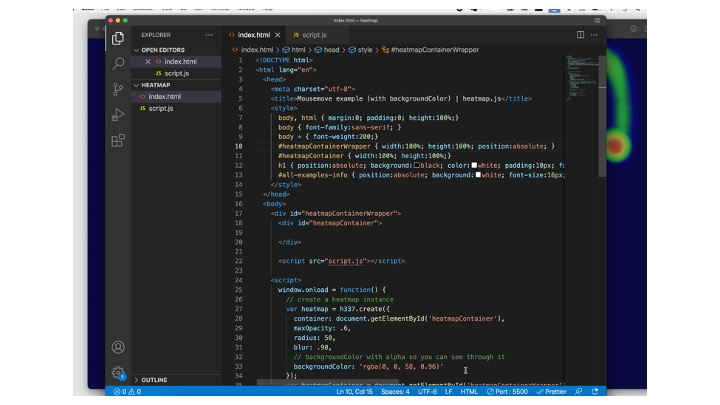
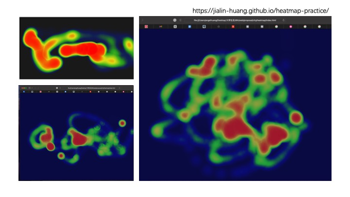
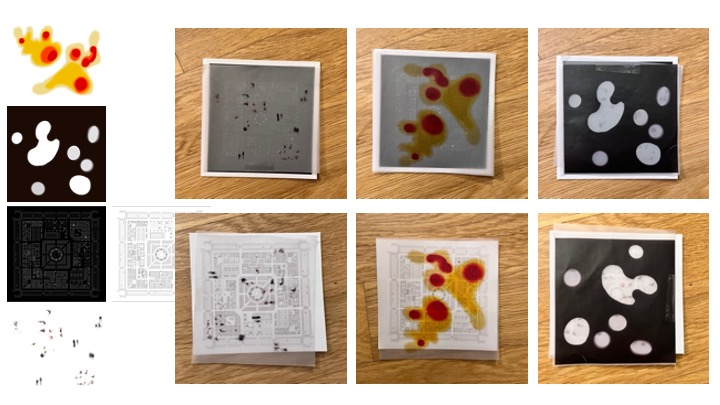
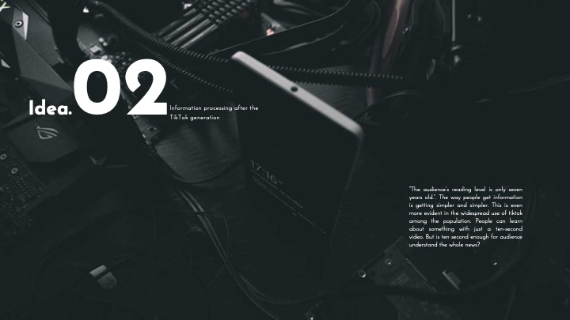
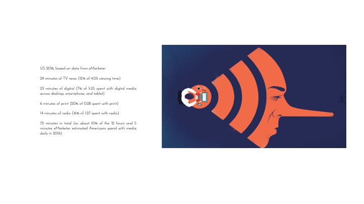
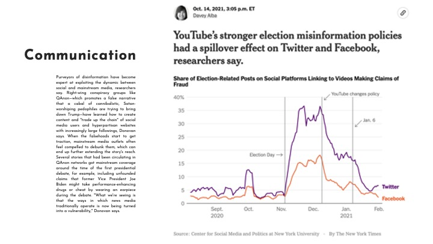
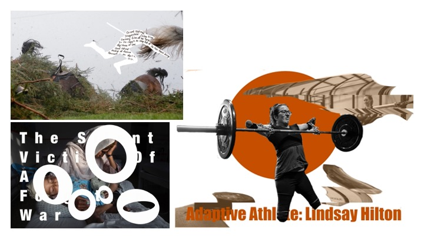
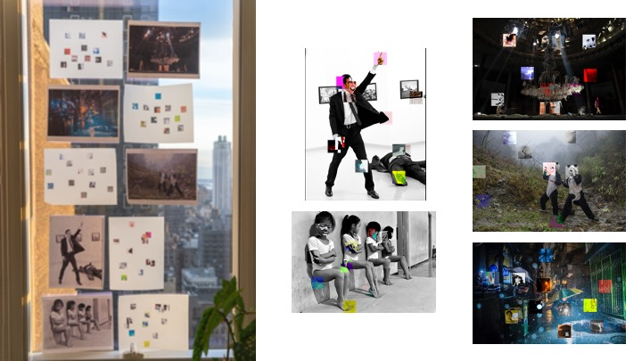
Computer graphics, which involves the input, production, and output of images without considering them
traditional picture processing methods, also includes layout optimization. This entails cutting items from sheet
metal with as minimal waste as feasible. Electronic component placement on PCBs causes similar challenges. The
production of images and their subsequent processing by automated analysis may be useful for a number of
artistic-creative jobs, such as layout difficulties in the printing and film and video industries. Similar
challenges exist in the advertising and textile sectors, from computer-aided pattern creation through material
cutting, where a computer-aided mode of operation allows greater adaptation to the particular body dimensions of
the user and minimizes waste in the cutting process.
Combining artistic and mechanical aims is difficult in building. This includes the positioning of structural
components in a given space and the intermediate management of technical data, such as the loadability of
scaffoldings.